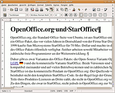
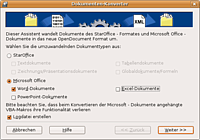

OpenOffice.org und StarOffice
Archivierte Anleitung
Dieser Artikel wurde archiviert, da er - oder Teile daraus - nur noch unter einer älteren Ubuntu-Version nutzbar ist. Diese Anleitung wird vom Wiki-Team weder auf Richtigkeit überprüft noch anderweitig gepflegt. Zusätzlich wurde der Artikel für weitere Änderungen gesperrt.
Anmerkung: war für maverick, lucid, hardy getestet, allerdings ist StarOffice nicht mehr verfügbar, die allgemeinen Informationen sind in den Artikel OpenOffice.org überführt worden
OpenOffice.org und LibreOffice , die Standard-Office-Suiten von Ubuntu, sind aus StarOffice entstanden. StarOffice ist ein Office-Paket, an dem seit 1985 in Deutschland von der Firma Star Division entwickelt wurde. 1999 kaufte Sun Microsystems Star Division und machte in der Folge den Quellcode des Office-Pakets öffentlich verfügbar. Seither arbeiten sowohl Mitarbeiter von Sun als auch zahlreiche freie Programmierer an der Weiterentwicklung.
Daher gibt es zwei Varianten des Office-Pakets: die Open-Source-Variante OpenOffice.org unter der LGPL-Lizenz und die kommerzielle Variante StarOffice. Beide Versionen sind weitestgehend kompatibel zueinander und auf vielen Betriebssystemen und in zahlreichen Sprachen verfügbar. Der Quellcode von OpenOffice.org beinhaltet aber nicht den kompletten StarOffice-Code. In der Regel liegt der Grund darin, dass Sun für Teile ihres Produktes Lizenzen an Dritte zahlt, die nicht in OpenOffice.org verwendet werden dürfen. Zu den Dingen, die zwar in StarOffice, nicht jedoch in OpenOffice.org zur Verfügung stehen werden, gehören:
Rechtschreibprüfung
Bestimmte Schriften (hier speziell auch asiatische Schriften)
Die Hilfe
Die Datenbank Adabas D
Vorlagen
Eine umfangreiche ClipArt-Galerie
Einige Sortierfunktionen (Asiatische Versionen)
Bestimmte Dokumenten-Filter u.a. VBA Tools

OpenOffice.org ist gewissermaßen die Entwickler-Version von StarOffice. Das heißt, Verbesserungen sowie Entwicklungen sind meistens immer zuerst für OpenOffice.org verfügbar und dann erst für StarOffice.
Von OpenOffice.org ist u.a. der Quellcode vollständig verfügbar (mit Ausnahme von den bereits erwähnten Teilen von StarOffice). Damit kann man, die entsprechenden Programmierkenntnisse vorausgesetzt, OpenOffice.org an seine individuellen Bedürfnisse anpassen. Das ist mit StarOffice nicht möglich. Der OpenOffice.org-Quellcode beinhaltet von Anfang an die Technik, die Sun Microsystems für die zukünftigen StarOffice-Versionen vorgesehen hat. Der Quellcode ist in C++ geschrieben und liefert sprachübergreifende und skriptierbare Funktionalität inklusive auf Java basierende APIs. Diese Quellcode-Technologie läutet eine neue Phase der Entwicklung ein, die es erlaubt, die Anwendungen sowohl einzeln als auch eingebettet in andere Applikationen zu nutzen. Etliche andere Features sind ebenfalls vorhanden, etwa die auf XML basierenden Dateiformate.
Allgemeines¶
OpenOffice.org unter Ubuntu¶
Die OpenOffice.org-Version in den Ubuntu-Quellen unterscheidet sich in manchen Punkten von der offiziellen OpenOffice.org-Version, so dass es einige Funktionsunterschiede, aber auch Profilunterschiede gibt. Der Hauptunterschied besteht vor allem darin, dass das OpenOffice.org aus den Ubuntu-Quellen nicht unbedingt die Java Runtime Environment von Sun Microsystems benötigt (es wird aber empfohlen, dies zu installieren, um eine volle Funktionalität zu gewährleisten). Dies wird sich aller Wahrscheinlichkeit noch ändern, da Sun Microsystems Java als OpenSource-Software freigegeben hat. Weiterhin ist es problemlos möglich, Videos in eine Präsentation einzubauen, solange GStreamer die entsprechenden Codecs dafür bereitstellt. Bei der offiziellen Version hingegen ist dafür sehr viel Aufwand notwendig (man muss u.a. das Java-Mediaframework installieren).
Openoffice.org unterstützt bis Version 3.2 ausschließlich Truetype und Postscript Schriften und verlässt sich dabei auf die systemweite Freetype-Bibliothek und nicht die bis einschl. Openoffice.org 2.4.1 in Openoffice.org enthaltene. Dies hat u.a. zur Folge, dass manche Schriften (z.B. Frutiger) anders auf dem Bildschirm dargestellt werden. Bei einer unbefriedigenden Schriftdarstellung auf dem Bildschirm hilft es jedoch meist, die Hinting- oder Antialiasing-Einstellungen für eine optimale Darstellung anzupassen, siehe Schriftbild verbessern. Ab Version 3.2 wird auch das OpenType-Schriftenformat unterstützt.
In den Paketquellen von Ubuntu befindet sich nur das jeweils zum Veröffentlichungstermin der Ubuntu-Version aktuelle OpenOffice.org. Möchte man eine aktuellere Version von OpenOffice.org benutzen, so muss man sich diese manuell installieren. Kritische Updates werden allerdings auch zwischen den einzelnen Veröffentlichungen zur Verfügung gestellt.
LibreOffice¶
LibreOffice  ist ein auf OpenOffice.org basierendes freies Office-Paket, welches von einer internationalen Entwicklergruppe erstellt wird. Das Projekt ist im September 2010 entstanden, als nach dem Verkauf der Fa. Sun an Oracle ein Teil der bisherigen Entwickler die Gelegenheit ergriffen hat, ein bereits in der Vergangenheit lange diskutiertes, aber nie umgesetztes firmenunabhängiges Entwicklungsportal zu gründen: die Document Foundation.
ist ein auf OpenOffice.org basierendes freies Office-Paket, welches von einer internationalen Entwicklergruppe erstellt wird. Das Projekt ist im September 2010 entstanden, als nach dem Verkauf der Fa. Sun an Oracle ein Teil der bisherigen Entwickler die Gelegenheit ergriffen hat, ein bereits in der Vergangenheit lange diskutiertes, aber nie umgesetztes firmenunabhängiges Entwicklungsportal zu gründen: die Document Foundation.
Da auch die Namensrechte Oracle gehören, ist ein Name gewählt worden, der die neue Situation verdeutlichen soll. Obwohl Oracle eingeladen worden ist, mit an LibreOffice zu arbeiten, hat man sich dort inzwischen entschieden, OpenOffice separat weiterzuentwickeln. Daher ist es möglich, dass zumindest mittelfristig zwei verschiedene Office-Pakete nebeneinander existieren. Allerdings hat Mark Shuttleworth (Gründer von Ubuntu) angekündigt, auf LibreOffice umstellen zu wollen, wenn die neue Version 3.3 rechtzeitig fertig wird (evtl. bereits ab April 2011 bzw. Ubuntu 11.04 Natty Narwhal).
Im bisherigen Stadium unterscheiden sich LibreOffice und OpenOffice nicht — alle Komponenten von OpenOffice.org sind auch in LibreOffice enthalten und nutzbar.
Komponenten¶
Writer - Erstellen und bearbeiten von Text und Grafiken in Briefen, Berichten, Dokumenten und Webseiten (Freies Pendant zu Microsoft Office Word)
Calc - Berechnungen ausführen, Informationen analysieren und Listen in Tabellen verwalten (Freies Pendant zu Microsoft Office Excel)
Draw - Zeichnungen erstellen und bearbeiten, Flussdiagramme entwerfen und Logos kreieren
Math - Erstellen und bearbeiten von mathematischen Formeln
Impress - Erstellen und bearbeiten von Präsentationen für Dia-Vorführungen, Meetings und Web-Auftritte (Freies Pendant zu Microsoft Office Powerpoint)
Base - Verwalten von Datenbanken, erstellen von Abfragen und Berichten (Freies Pendant zu Microsoft Office Access)
Weitere Hinweise zu den einzelnen Komponenten findet man hier.
OpenDocument Format¶
OpenOffice.org ab Version 2.0 und StarOffice 8 ab Version 8 verwenden das OpenDocument-Format als Standardformat, welches 2006 offiziell als ISO-Standard veröffentlicht wurde. Die Notwendigkeit für OpenDocument wird darin gesehen, ein einheitliches, kompatibles Dokumentenformat einzuführen, dessen Zukunft nicht von einzelnen Anbietern abhängt und auf lange Zeit gesichert ist, um auch in Zukunft noch uneingeschränkt auf die Daten zugreifen zu können. Außerdem soll durch den offenen Standard mehr Wettbewerb ermöglicht werden.
An dieser Stelle sei auch auf die folgenden Beiträge zu Microsoft Office hingewiesen:
Datenmigration/Word - Interoperabilität zu Microsoft Word Formaten
Datenmigration/Powerpoint - Interoperabilität zu Microsoft Powerpoint Formaten
Datenmigration/Excel - Interoperabilität zu Microsoft Excel Formaten
Achtung!
Es sollten niemals Word-Dokumente unbekannter oder nicht vertrauenswürdiger Herkunft mit OpenOffice.org oder mit StarOffice geöffnet werden. Nähere Informationen befinden sich im Artikel Datenmigration/Word.
Dokumenten-Konverter¶
 Möchte man mehrere Dateien mit einem Arbeitsschritt in ein OpenDocument-Format konvertieren, so bieten OpenOffice.org und StarOffice einen Dokumenten-Konverter an. Unter "Datei -> Assistenten -> Dokumenten-Konverter" lassen sich alle gewünschten Dokumente am Stück konvertieren.
Dann muss nur noch der Ordner gewählt werden, in dem das Programm nach den Ausgangsdokumenten sucht und es muss der Ordner eingestellt werden, in dem die neuen OpenDocument-Dokumente gespeichert werden sollen. Office-Vorlagen werden dabei auch gleich als OpenOffice.org- und StarOffice-Vorlagen im entsprechenden Ordner gespeichert.
Versteckte Informationen¶
Immer, wenn ein Dokument an eine Person oder Firma geschickt wird, sollte man darauf achten, dass der Empfänger nicht unnötigerweise Informationen erhält, die unter Umständen privater Natur sind (Informationen zur verwendeten Version, ursprünglicher Autor, ursprüngliche Bezeichnung etc.). Zum Beispiel möchte man es vermeiden, dass ein Unternehmen Informationen erhält, an welche weiteren Firmen Bewerbungen gesendet wurden. Solche "versteckten" Information können gelöscht werden, wenn man im Reiter "Datei -> Eigenschaften -> Allgemein" die Benutzerdaten löscht. In den weiteren Reitern wie "Beschreibung", "Benutzer", "Internet" und "Statistik" können weitere eventuell private Informationen enthalten sein.
Zu beachten ist auch, dass diese "versteckten" Informationen auch bei einem Format-Export wie z.B. in PDF erhalten bleiben.
Erweiterungen¶
OpenOffice.org und StarOffice¶
Archiv/PrOOo-Box - OpenOffice.org und StarOffice werden um weitere ClipArts, Schriften, Makros, Dokumentationen und Anleitungen erweitert. Eine jeweils neueste OpenOffice.org-Version ist enthalten.
OpenDocument Thumbnails - OpenDocument-Dokumente können auch im GNOME-Dateimanager Nautilus als Thumbnail-Vorschau dargestellt werden, so wie man es von PDFs, Bildern oder auch Filmen gewohnt ist.
In diesem Foren-Thread
werden von Usern einige Links und Büchertipps gepostet, die beim Umgang mit OpenOffice.org und StarOffice behilflich sein sollen. Es soll an dieser Stelle auch auf das Schulmaterial
vom deutschen OpenOffice.org-Projekt hingewiesen werden. Man bekommt hier vor allem Vorlagen für den Schul- und Studentenalltag.
Hinweis:
Aufgrund der Tatsache, dass StarOffice und OpenOffice.org aufeinander basieren, kann man jedes Buch und jeden Link, der sich auf OpenOffice.org bezieht, auch auf StarOffice anwenden. Bücher oder Links, die sich ausschließlich auf StarOffice beziehen, lassen sich jedoch nicht immer in OpenOffice.org anwenden, weil StarOffice die oben angegebenen Zusatzkomponenten enthält, die unter OpenOffice.org fehlen.
OpenOffice.org¶
Erweiterungen, die nur OpenOffice.org betreffen, werden aus Gründen der Übersichtlichkeit in einem eigenen Beitrag aufgelistet.
- Erstellt mit Inyoka
-
 2004 – 2017 ubuntuusers.de • Einige Rechte vorbehalten
2004 – 2017 ubuntuusers.de • Einige Rechte vorbehalten
Lizenz • Kontakt • Datenschutz • Impressum • Serverstatus -
Serverhousing gespendet von